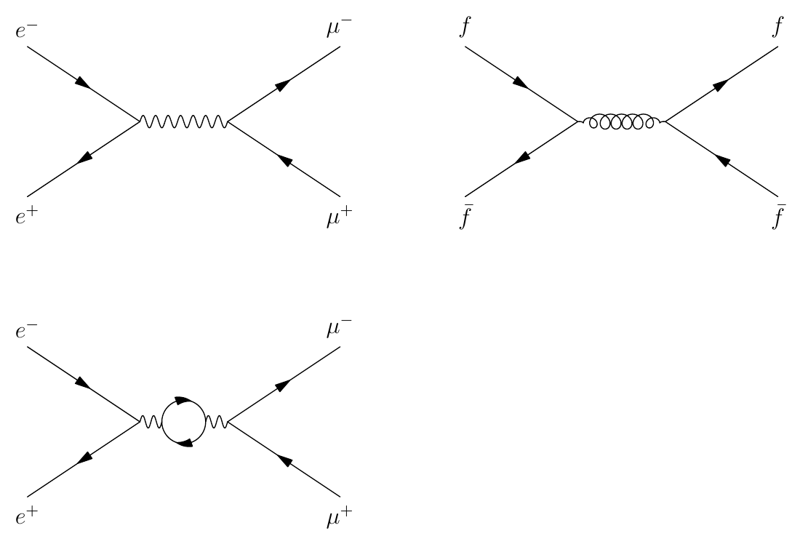
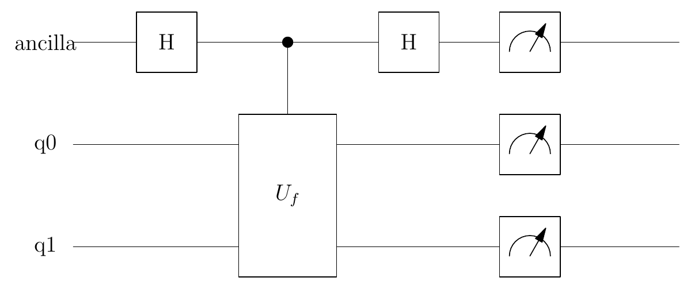
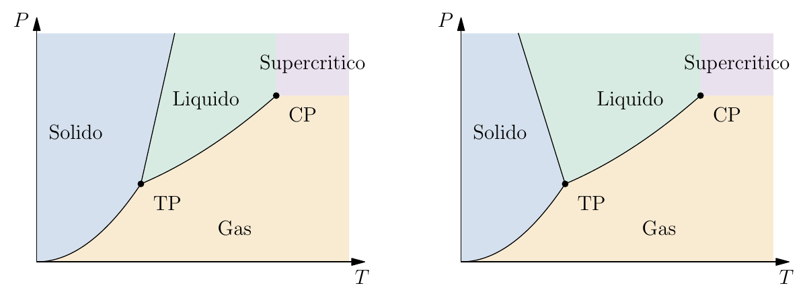
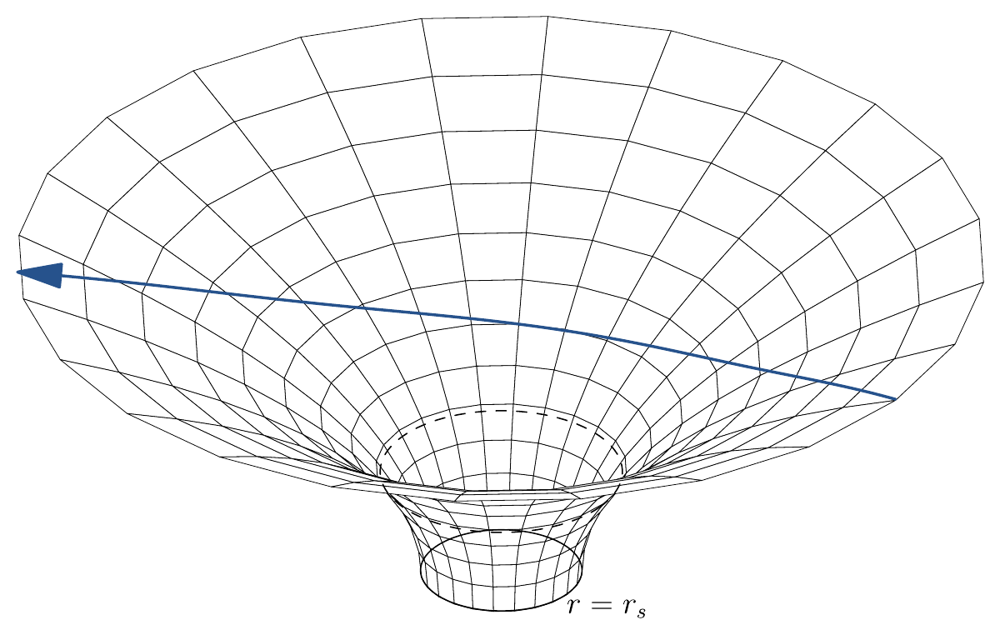

Install the extension
The packaged editor, C++ core, examples and documentation. Start here if you want to draw figures in VS Code.
Download VSIX ↓PERSONAL PROJECT 03 · OPEN SOURCE · VERSION 1.0
I wanted the structure of a figure to stay close to the physics I was studying. Pyxis turns a short description into a vector drawing, with LaTeX labels and a source I can return to.
Windows x64 · C++17 core · MIT license

I study theoretical physics at the University of Turin. My notes move between derivations and drawings: a scattering process, a quantum circuit, a spin lattice, a causal diagram. Each asks for a different visual language. I wanted to describe these objects without rebuilding every arrangement from individual lines.
That is the starting point of Pyxis. A circuit is a set of qubits and gates. A Feynman diagram has a chosen channel, external particles and a mediator. When the structure is familiar, a small package can turn it into geometry. When I need a particular curve or annotation, the geometric primitives are still available.
I also wanted to keep the work editable. The .pyxis file records my choices; PDF and SVG are the exported figures. I can combine packages for a thesis, change a label, or revisit a drawing months later without treating it as a finished image I can no longer explain.
Asymptote does the vector rendering. I built Pyxis around it: a C++ language core, a collection of physics models and a VS Code interface connected to my LaTeX notes. The aim is to shorten the path from an idea to a figure while keeping the assumptions visible.
These examples use the implemented 1.0 syntax. The preview images are actual exports, not mock-ups.
use qft
width 150
grid off
feynman tree {
mediator: photon
}
feynman selfenergy {
mediator: photon
loop: fermion
loop-position: 0.5
loop-radius: 0.35
}
feynman strong {
incoming: [fermion, antifermion]
outgoing: [fermion, antifermion]
mediator: gluon
}
place selfenergy below tree
place strong right-of treeThis is graphical notation. Pyxis does not check whether the chosen particles and vertices describe an allowed interaction.
profile quantum
width 130
grid off
circuit controlled {
ancilla: H, control(f), H, M
q0: _, oracle(f,"$U_f$"), _, M
q1: _, oracle(f,"$U_f$"), _, M
}The circuit is drawn from its gates and connections. Pyxis does not simulate its state or measurement outcomes.

profile statmech
grid off
width 165
phase-diagram ordinary {
melting: positive
labels: ["Solido", "Liquido", "Gas", "Supercritico"]
}
phase-diagram anomalous {
melting: negative
labels: ["Solido", "Liquido", "Gas", "Supercritico"]
}
place anomalous right-of ordinary gap=1
# Schemi topologici: non rappresentano misure di una sostanza specifica.These are schematic P–T phase diagrams. The shapes are not a fitted equation of state or measurements for a particular material.

profile relativity
width 135
camera 5 -7 5
geodesic ray {
impact: 3
extent: 6
view: embedding
mesh: 12
}
# Proiezione spaziale di un raggio nullo riportata sull'embedding di Flamm.
# Non e' una geodetica intrinseca della sola superficie spaziale.The ray is a Schwarzschild equatorial null geodesic. The embedding lifts its spatial projection onto a Flamm surface; it is not an intrinsic geodesic of that surface.

I can import more than one course package with use qft, quantum, relativity, statmech. Figures containing 2D and 3D scenes use separate environments.
.pyxis, .svg and .pdf, then inserts the figure into the document.For figures that belong directly in a derivation, I can instead write a pyxis environment in the .tex source. The Pyxis build prepares its figures, follows supported chapter inputs and produces the document PDF without rewriting my original files.
Version 1.0.0 · Windows x64. The extension includes the C++ compiler executable; the rendering tools are installed separately. No Marketplace account is needed to install a VSIX.
The packaged editor, C++ core, examples and documentation. Start here if you want to draw figures in VS Code.
Download VSIX ↓The C++ and JavaScript source, scripts, full manuals and example files. Includes the Windows compiler binary for the CLI workflow.
Download project ↓The complete documentation in Markdown, including the command catalogue, package conventions and development guide.
Download documentation ↓pyxis.asymptote and pyxis.ghostscript to their executable paths. Then try Pyxis: Figura da esempio del corso.The CLI scripts additionally need Node.js. Rebuilding the C++ core needs a C++17 compiler. Linux and macOS binaries are not included in this release.
Detailed setup & troubleshooting · Download checksums · MIT license
The manuals are in Italian. I have separated the practical workflow, the language reference and the implementation so that each can be read for a different purpose.
Dependencies, VS Code setup, exports and figures inside LaTeX chapters.
↗ 02 / REFERENCESearchable syntax, parameters, units, geometric objects and editor actions.
↗ 03 / PHYSICSAll twelve semantic objects, model properties and the limits of each representation.
↗ 04 / DEVELOPMENTA guide from C++ to the parser, geometry, numerical methods and editor integration.
↗ 05 / VALIDATIONReproducible commands, what they check and what the timings do not guarantee.
↗ 06 / LIBRARYThe full archive, with future design proposals clearly separated from implemented syntax.
↗Pyxis is a drawing framework with selected numerical models. It does not infer the physics of a problem from a sentence. I choose the topology, parameters and interpretation, then check whether the resulting figure says what I intended.
The 1.0 release supports the documented catalogue: twelve semantic objects across four packages, together with geometric primitives, vector export and a LaTeX workflow. General QFT graphs, quantitative phase diagrams from data and arbitrary spacetime metrics would need further models. I describe those possibilities in the design notes rather than presenting them as existing commands.
I test the numerical parts against analytic solutions, invariants and limiting cases where these are available. A plausible picture alone is not enough. The verification notes explain the checks; the package manual records the physical conventions.
I release the software, bundled documentation and examples under the MIT license. Asymptote, TeX and Ghostscript retain their own licenses and are not bundled as rendering runtimes. This is a personal project, not official University of Turin software.
If you try Pyxis on your notes, I would be interested in a small reproducible example: what you wanted to draw, the source you used and where the result became awkward. That is the most useful starting point for deciding what to improve.
Send me an example ↗